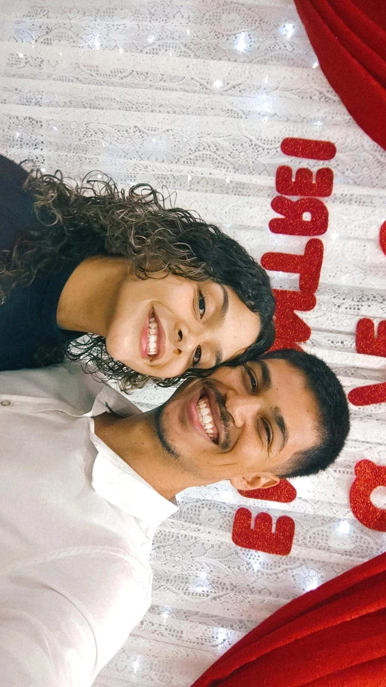

1° Lembrança E foi aqui que se deu início a uma tradição, ida no shopping pra comemorar nosso aniversário de namoro, cada passeio, cada conversa, cada momento ao seu lado é muito especial, eu te amo!!!2°Lembrança Momentos fitnesses, a vida também não é só sair e comer, vamos voltar para essa vida ainda, treinar junto, fazer graça quase deixar o peso cair no outro (detalhes kkkkkkkkkkkkkkkk)
Eu te amo muito!!!3° Lembrança Primeira festa que fomos assim, você estava com o olhado machucado ainda, coitada, kkkkkkkkkkkkkkkk maior lembrança e você toda feliz e eu só o básico cara fechada, talvez não seja muito chegado em festas 4°Lembrança Aqui temos uma outra tradição, mas o mais legal da foto é que trocamos a meia mas no fundo você é o lula molusco e eu sou o Bob esponja responsável por te amolar5°Lembrança prainha nossa viagem para o RJ, precisamos viajar, viajar é bom demais e colecionar mais lembranças dessa6° Lembrança Conhecendo o Maracanã, vamos fazer um comparativo nessas lembranças mesmo para chegarmos a uma conclusão 7°Lembrança Esse é bem recente, passeio mas é engraçado kkkkkkkkkkkkkkkk os próprios ET DE VARGINHA8°Lembrança Recente também, mas primeiro parque, vamos sempre lembrar porque quando a gente tiver indo na Disney, em vários parques chique vamos ver como foi o começo 9° Lembrança Celebrar a inteligência do neném, você é capaz de tudo, não deu certo mas sabemos da sua capacidade e Deus tem coisas grandiosas preparadas para você amor 10°Lembrança Minha criancinha, podemos ter vergonha de nada não, aproveitamos foi divertido e ninguém nem se lembra da gente e vai ser uma memória boa nossa para sempre 12°Lembrança Vamos ter uma vida toda um ao lado do outro, viagens formaturas (Se Deus quiser logo teremos outras) temos muitas memórias juntos aqui terá apenas algumas, e construiremos muito mais, uma vida inteira ao lado um do outro13° Lembrança Nossa quebra cabeça, primeiro é único, mas vamos montar outro ainda precisa virar uma tradição para aumentar nosso número 14°Lembrança Nossos rolês aleatório, sair para conversar e comer, kkkkkkkkkkkkk é divertido saudades, mas agora vamos evoluir ir para o meio do mato em São Thomé conhecer cachoeiras e o próximo passo15°Lembrança Primeira é única quadrilha que dançamos juntos, nunca tive vontade de dançar mas nesse ano eu queria, foi muito muito bom danças com você e colecionar mais essa memória ao seu lado 16°Lembrança Muito aleatório né kkkkkkkkkkkkkkkk mas sempre fomos assim, o importante e estarmos juntos 17°Lembrança Uma vida inteira juntos, falando isso porque esse presente sempre estará para sempre aqui para visualizarmos, então, quando estivermos velhinhos vamos olhar e lembrar do nosso trote do terceirão 18° Lembrança Segundo estádio que conhecemos, e vamos conhecer muito mais ainda 19°Lembrança Como eu disse em uma lembrança anterior, vamos só chegar a uma conclusão na próxima e ter o veredito 20°Lembrança Veredito final, palmeirense incubada EU TE AMO MINHA PALMEIRENSE 21°Lembrança Me diga, qual casal tem gol no Allianz ? 22°Lembrança Gostamos de um rolê aleatório, igual eu já disse o mais importante é a gente junto, amo você

23°Lembrança Dias do namorados, foi incrivél, ganhamos um prêmio de casal mais novo, logo logo nunca ganharemos isso. IMAGINA FALAR 50 ANOS JUNTOS! SONHO! TE AMO!24°Lembrança Um presentinho porque você sempre vai ser minha Tartaruguinha 25°Lembrança A gatona num estilo diferente, Feliz aniversário meu amor! Te amo!